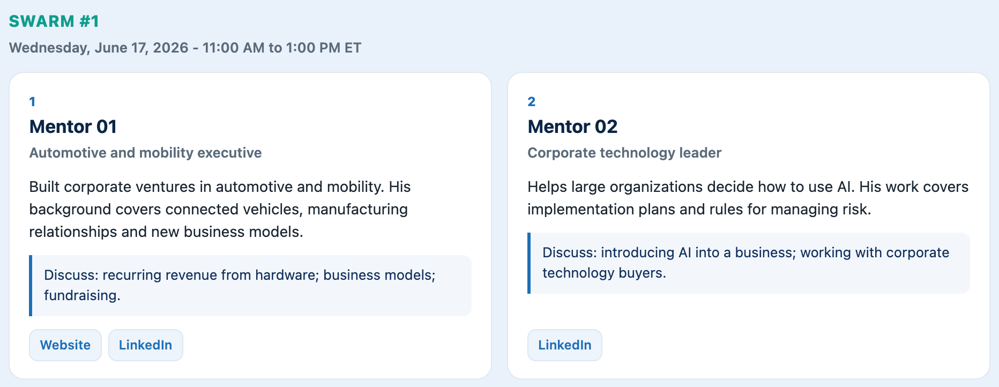

2024–26$5 millionDeals with major institutions · company-reported
In the founder’s words
“Davide rapidly understood our technology and our positioning in both U.S. and international markets […] and personally helped us craft clear and compelling messages to reach our target technology partners.”
2026$201,000Signed contracts · Smithsonian, University of Maine, Purdue
My role
I coached the team through gBETA.
First paying customer: the University of Maine, a research partner · founder update, August 2026
No outside investment yet; grown on research grants and customer revenue · founder-reported, September 2026
Laser scanners measure every tree; patents licensed from Purdue · founder-reported
Sources and context
About $201,000 in signed contracts · Smithsonian Environmental Research Center, University of Maine, Purdue · Founder-reported, September 2026 · Founder-reported
My role. I coached ArborMapper through gBETA.
Founder update relayed August 24, 2026; founder-reported figures, September 2026.
Three institutions have signed contracts. The company has taken no outside investment and has grown on research grants and customer revenue.
About $2.57 million in federal awards in total, including a Department of Energy award · sbir.gov
Grew from 2 to 5 full-time employees within three months after the program · founder letter, January 2025
Sources and context
$999,692 · DHS Phase II award · Award: March 26, 2024–March 25, 2026 · Official award record
My role. The co-founder credits my coaching on financing milestones, cash flow, proposal positioning, and investor communication.
Official SBIR record; founder letter dated January 26, 2025.
DHS scheduled the award to begin March 26, 2024, two days before the recorded gBETA kickoff. The award and the founder’s account of my coaching are separate evidence.
I supported fundraising preparation and investor introductions.
Rounds: pre-seed November 2023, seed March 2024, strategic June 2025 · Caplight
Sources and context
$1.34 million raised from investors · Including a strategic investment by Millennium Information Services · Caplight, September 2026; strategic round June 4, 2025 · Caplight and investor announcement
My role. I supported fundraising preparation and investor introductions through gBETA.
Caplight company page, read September 15, 2026; Millennium Information Services (an Xceedance company) announced its strategic investment on June 4, 2025.
The investment amount was not disclosed. The investor announcement records the company’s transaction.
About $90,000 · Pre-seed during and after gBETA · Oct–Dec 2025 cohort; letter February 28, 2026 · Founder-reported
My role. I helped refine the fundraising narrative, investor materials, traction metrics, and introductions to participating funders.
Founder letter updated February 28, 2026.
The founder reported approximately $90,000 raised during and immediately after the October–December 2025 cohort.
3
International companies
Founders from Guatemala, Italy and Colombia, with U.S. market entry where it happened.
5 companies
I supported the international expansion of gener8tor by leading the launch of the first "gBETA Skyward: Aerospace & Advanced Manufacturing", an Italian program commissioned by and in collaboration with the Italian Region of Emilia-Romagna and co-funded by the European Union. 8 Italian startups advised; 4 brought into US operations. Feenix’s Indiana expansion ↗ · ITER IDEA’s Wisconsin program ↗
Vertikal X
2024Indiana HQU.S. headquarters expansion announced
In the founder’s words
“Davide facilitated our landmark partnership with Sports Tech HQ in Indiana […] a pivotal milestone.”
Company outcomes reflect the founders’ work and wider support. My role, reporting dates, and sources are shown separately. Figures reflect the dates shown; self-reported figures are marked.
“His hands-on mentorship, strategic guidance, and investor connections made a tangible difference to our trajectory at a critical stage of the business.”
Trev Keane · Founder, Feenix GroupSigned letter, 2026 Signed letter ↗
“His strategic guidance materially influenced our U.S. market development efforts and continues to generate tangible business opportunities and institutional relationships in the United States.”
Carolina Gianardi · CEO, IntuosSigned letter, June 2026 Signed letter ↗
“He provides insightful guidance, practical advice, and unwavering support, helping founders navigate the complexities of the startup ecosystem.”
“Davide is an incredible resource for any early-stage startup, with deep connections in the VC space and invaluable expertise in building compelling pitch decks.”
“His one-on-one mentor sessions and feedback on our lightning pitches were invaluable, culminating in a first place win for Covert Defenses at the Innovation Showcase.”
“From personalized one-on-one sessions to facilitating crucial connections, Davide guarantees that your accelerator journey is enriched with utmost value.”
“His methodology and teachings […] really helped me and my Startup propel forward with more structure, process and provided a solid foundation for growth.”
“Davide’s ability to foster meaningful connections, provide actionable insights, and guide teams through challenging milestones makes him an invaluable asset.”
“Davide isn’t just a Program Manager; he’s a startup whisperer. He turned our muddled message into magic, opened networking doors, and prepared our startup for success.”
Set goals, align the cohort, and build a strategy.
Weeks 1–6
Weekly programming
Virtual
Standups, funding-focused Lunch & Learns, and tailored workshops.
Week 7
Investor & partner meetings
In person + virtual
1:1 pitches with 25+ investors and ecosystem partners.
Weeks 1–6 · weekly plan
45-minute 1:1Founder strategy session
5 expert sessionsMentors and industry specialists
5 customer conversationsSales priorities, progress, and blockers
What founders leave with
A stronger network
Mentor and investor wishlist
Accountability newsletter: highlights and lowlights
Relationships with mentors, funders, customers, and partners
A clear 3–5 year business story
Executive summary for investors and pitch deck
Press-release overview
Cash flow, financing, and milestones
A weekly sales plan
Objectives (OKRs) and ideal customer profile (ICP)
Weekly sales priorities and blockers
Customer conversations, sales materials, and a repeatable pipeline
My Network in the Venture Ecosystem
300+
Mentors in My Network
200+
Investors in My Network
10+
Startup Competitions Judged
20+
Universities & Ecosystem-Support Orgs
Organizations and roles
Advisor, judge, and mentor rolesAdvisorJudgeMentor
Born Global
Indiana Hardtech
Rally Conf 2025
Rally Conf 2024
Venture Club of IN
Global Entrepreneur-in-Residence Network
McNair Institute · USC
McCloskey · ND
McGinnis · CMU
SaaStock Austin 2025
Moonshot · Purdue
New Venture Challenge
MIT Enterprise Forum
Go Global World Sharks
Indiana DECA
Crossroads · The Mill
Pitch Mayhem
Entrepreneur-in-Residence Vetting Committee
Purdue Innovates
NSF I-Corps
VillageCapital
Techstars · Pittsburgh
Notre Dame · Idea Center
STARTedUP Foundation
Zionsville HS
Indiana University
Purdue Pitch · Global Accelerator Network
Earlier ventures and experience
Born Global: Vice-President of Platform, supporting the Founders’ Roundtable and Venture Lab advisory.
McNair Institute, University of South Carolina: Advisory Council work supporting student founders.
Co-founder: Young Outcasts Podcast, EarOnAir, and LushTech.
Earlier experience includes Amazon Pay, Kraft Heinz, BX Group, Mamma Flora, Build It Up, UIBE Business School, and Euronatale. Roles and dates are in my resume.
I supported the international expansion of gener8tor by leading the launch of the first "gBETA Skyward: Aerospace & Advanced Manufacturing", an Italian program commissioned by and in collaboration with the Italian Region of Emilia-Romagna and co-funded by the European Union
8 Italian startups advised; 4 brought into US operations.
Working priority tool · fictional example · based on my original guide
02Investor & mentor connectionsPreparation, introductions, and follow-ups

5 projects
AI · Founders, mentors, and investors
Prepare for mentor and investor meetings
Problem. Founders open individual profiles to work out who can help.
What changes. I linked meeting dates to researched profiles and discussion topics. Ask about a business need; AI suggests relevant guests from the selected list. Founders can check the source links before requesting an introduction.
Founders can prepare relevant questions before each meeting.